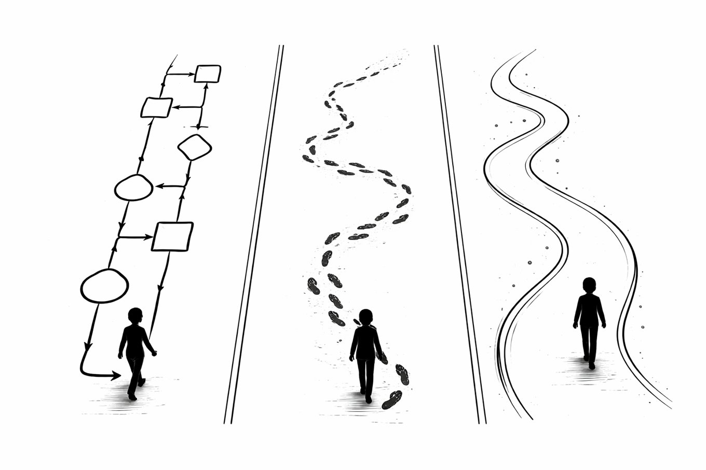

行動経済学 × SNSビジネスの視点で、売れる「考え方の型」を綴ります。
焦りは双曲割引で意思決定を歪め、文章にも滲む。環境が意思決定を支配するという視点から、生活を整えて余裕から始める起業の順番を解説します。
売上＝母数×率のうち、誰も語らない「率」を0.1%という最小単位で上げる。フォロワー増より小さな労力で大きく積み上がる改善を解説します。
SNSの売り上げは「母数×率」の2変数。増やす戦略と上げる戦略、どちらを選ぶかで発信内容が全然変わる。
「フォロワーを増やさなきゃ」が本当の目的にすり替わっていませんか。行動経済学の「目的のすり替わり」で、失敗の本質が見えてきます。

満足の声を値上げの根拠にすると足をすくわれる。価格と価値のほんとうの関係を、行動経済学から読み解きます。
SNS疲れは意志力の問題ではない。元Googleのトリスタン・ハリスが指摘する「脳の脆弱性を利用した設計」を解説します。

「LINE導線を自動化します」の9割は、ただのフロー自動化。フロー・動線・導線の違いから、本物の導線設計に必要な3つの視点までを行動経済学で解説します。
フォロワーを増やす時代は終わった。海外で新常識となっているAnti-Audience Buildingとは何か。少ないフォロワーで売れる人の3原則を解説する後編。
いきなりですが、告白します。僕は、フォロワーを増やす方法を知りません。伸びる投稿の作り方も知らないし、学ぼうとも思っていません。
ZOOMセミナーの「待ち時間」を入り口に、フォロワー数という数字の呪縛を解き、既存顧客を最優先する濃い顧客優先タスクの本質を解説します。
最近、タイムラインを見ていると「デジャブかな？」と思うことがよくあります。2年前に流行ったものが、名前を変え、あるいは少し形を変えて、 また「最新トレンド」として現れる。
最近、InstagramやX（旧Twitter）を見ていると、コンサルタントや起業家の人たちがこぞってこう叫んでいますよね。